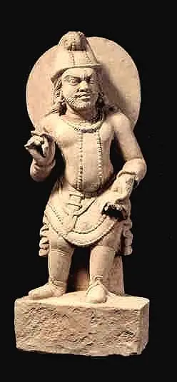

Welcome to the Mathematical World!
Pingala (c. 3rd–2nd century BCE)
Indian Mathematician and Pioneer of Binary Arithmetic
Pingala is one of the earliest Indian scholars to apply mathematics in the study of language. He lived around the 3rd–2nd century BCE (though some traditions place him slightly earlier) and authored the Chandaḥśāstra, a Sanskrit treatise on prosody (poetic meters). In ancient India, mathematics was closely tied to astronomy, linguistics, and literature, and Pingala’s work exemplifies this unity.
Binary Number System
Pingala represented syllables as either laghu (short, 0) or guru (long, 1), introducing a form of binary notation centuries before it appeared in Europe. This systematic binary representation laid the foundation for later combinatorial and computational techniques.
Pascal’s Triangle (Meru-prastāra)
Pingala arranged binomial coefficients in a triangular form called Meru-prastāra (“mountain arrangement”), equivalent to the later European Pascal’s Triangle. This structure allowed him to count the number of possible meters with a given number of syllables efficiently.
Fibonacci Sequence in Prosody
His recursive study of meters naturally led to the Fibonacci sequence. If F(n) denotes the number of meters with n syllables:
\[ F(n) = F(n-1) + F(n-2) \]
This recurrence relation arises from counting syllable patterns of length n using patterns of length n-1 and n-2.
Combinatorial Enumeration
Pingala developed systematic methods for counting combinations of syllables, essentially laying the groundwork for early combinatorics and binomial expansions.
Selected Mathematical Expressions
- Binary Representation: Guru (–) → 1, Laghu (⏑) → 0. Each metrical pattern could be encoded in binary digits.
- Meru-prastāra (Pascal’s Triangle): Triangular arrangement of binomial coefficients: (n¦0),(n¦1),(n¦2),…,(n¦n).
- Fibonacci Relation: F(n) = F(n-1) + F(n-2), describing the number of meters with n syllables.
Legacy
Pingala’s Chandaḥśāstra is a milestone in mathematics and linguistics. His binary system predates Gottfried Leibniz by nearly two millennia, his recursive counting anticipated modern combinatorics, and his discovery of the Fibonacci sequence through prosody shows the deep connection between art and mathematics in India. Later scholars, such as Halayudha and Jayadeva, expanded and applied his insights, ensuring Pingala’s influence persisted for centuries.
Conclusion
Pingala represents one of the earliest figures whose mathematical work directly engages with binary numbers, combinatorics, and recursion. Although his immediate subject was poetry, his methods continue to influence mathematics, computer science, and information theory today.